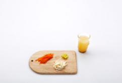
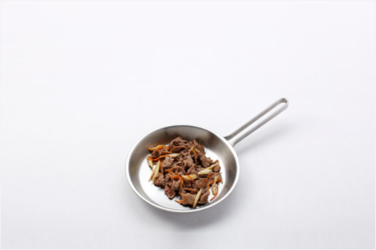
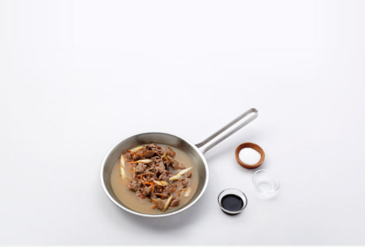

Japanese Food


재료 리스트
쇠고기 불고기용 200g | 우엉 100g | 당근 20g | 생강 1쪽 | 멸치 | 다시마 |
일본식 쇠고기 장조림 양념장( 참기름 1작은 술 | 간장 1/2큰술 | 설탕 2큰술 | 맛술 2큰술 )
레시피
1. 우엉은 껍질을 벗겨 연필 깍듯이 깍고 당근과 생강은 곱게 채 썰어주세요.
물 1컵에 멸치와 다시마를 넣고 육수를 만들어주세요.

2. 달군 팬에 참기름을 두르고 소고기를 넣어 볶다가 고기가 80% 정도 익었을 때
우엉과 당근, 생강을 넣고 1분간 더 볶아주세요.

3. 설탕과 맛술을 넣고 섞어서 살짝 볶은 뒤 간장과 육수를 부어 중약불에서 국물이 자작할 때까지 조려서 마무리 해주세요.

일본식 쇠고기 장조림 완성 !!